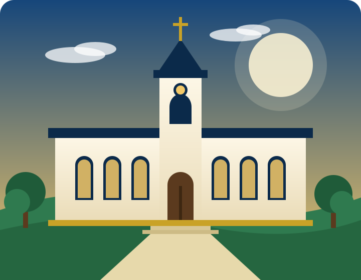

Since 1927 • Kabankalan City, Negros Occidental
Kabankalan Catholic College, Inc.
An educative and evangelizing community committed to quality education and holistic formation, with a preferential option for the poor.

About KCC
Faith, learning and service for almost a century
Kabankalan Catholic College began in 1927 as the Kabankalan Institute and was later renamed the Kabankalan Private Academy. By 1953 the Columban Fathers were administering the school, and over the years bishops, lay leaders and religious congregations such as the St. Paul Sisters of Chartres, the Religious of the Good Shepherd and the Carmelite Sisters of Our Lady have helped it grow.
- Catholic education from kindergarten to college.
- Senior High School in the Academic and Technical-Vocational-Livelihood tracks.
- Formation guided by ten core values, from love and integrity to humility.
99
Years of Service
7
College Programs
2
Senior High Tracks
10
Core Values